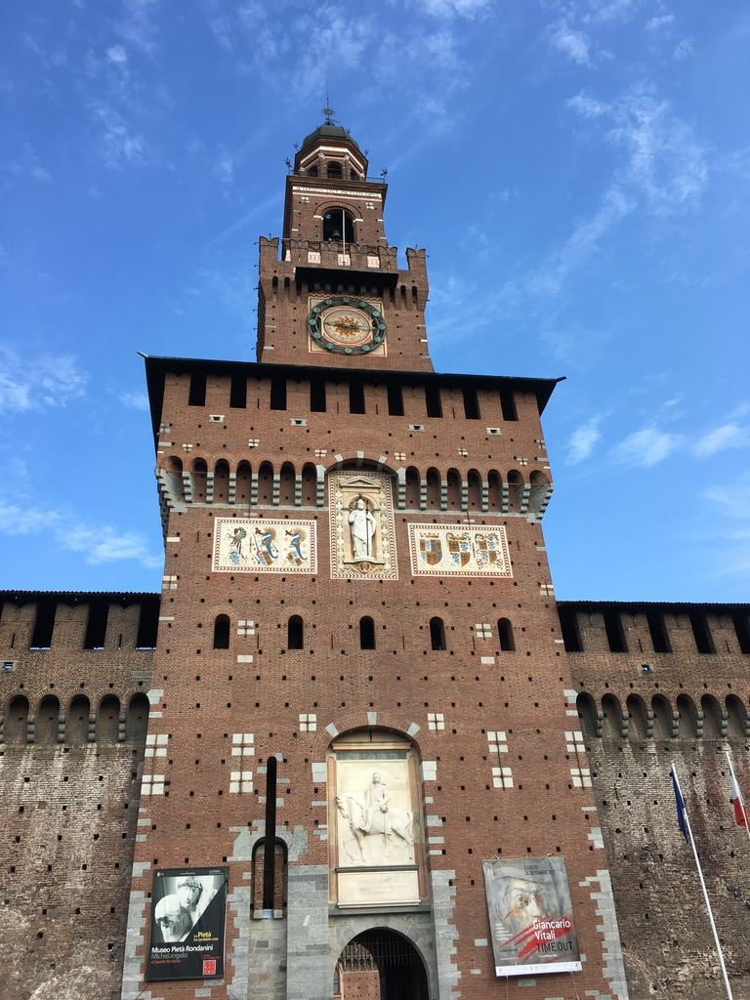
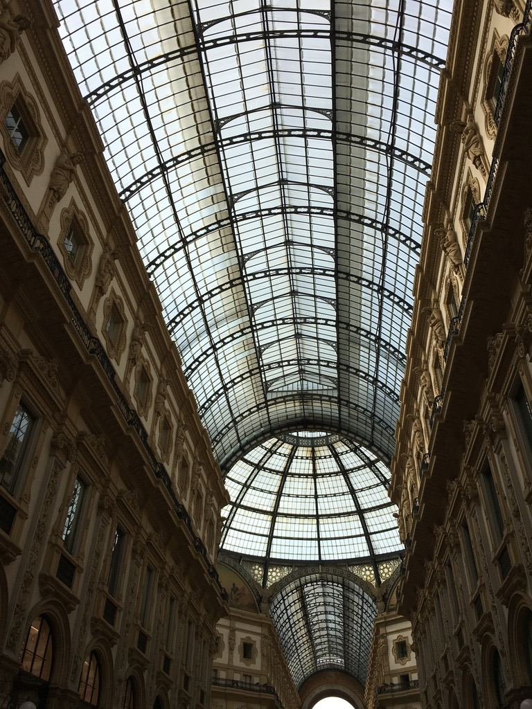
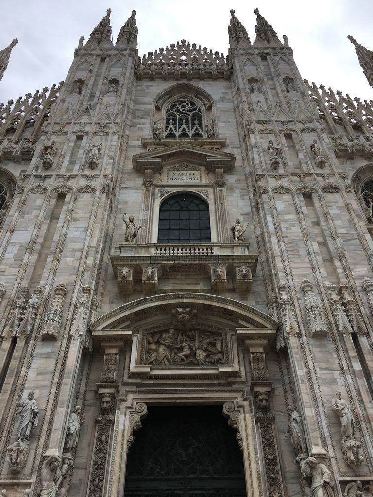
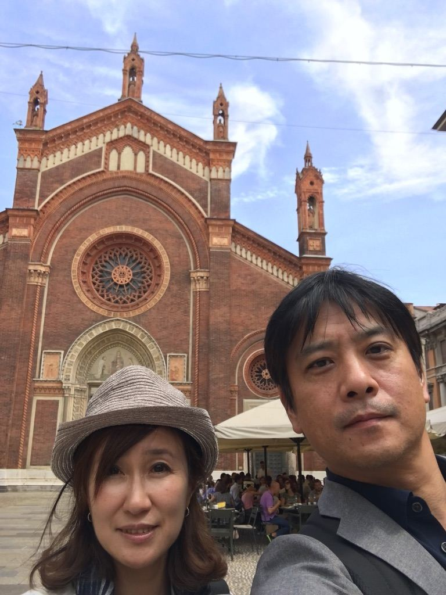
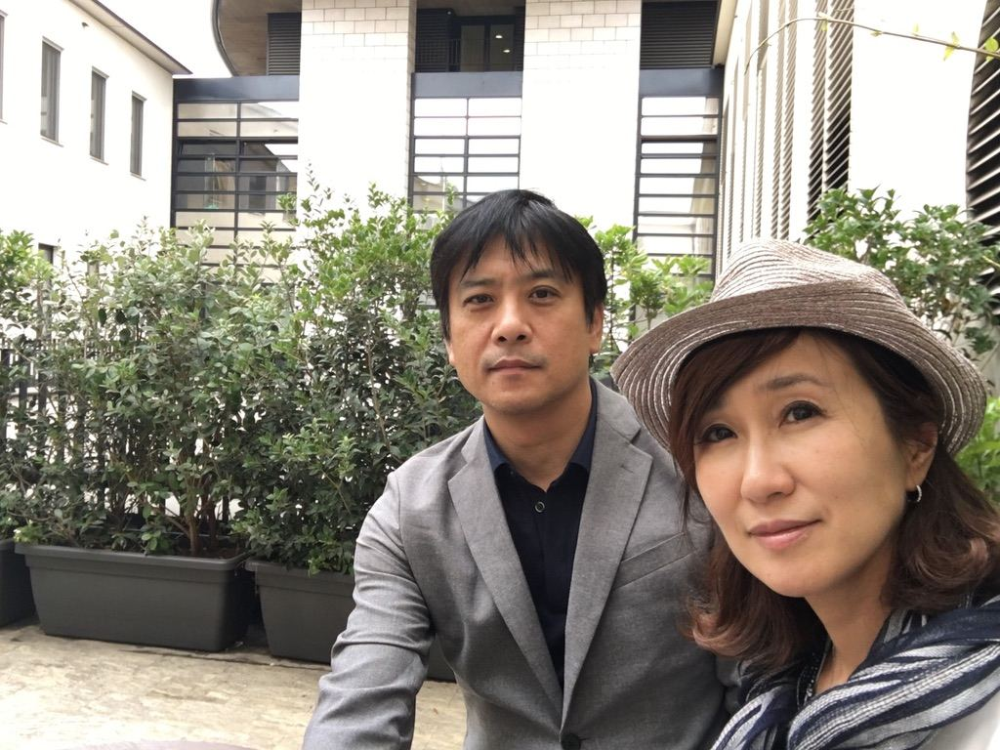

ミラノの大聖堂
ミラノ
旅はミラノから始まった。朝、赤レンガのスフォルツェスコ城の塔を見上げ、ガラスの天井がアーチを描くガッレリアを抜けて、ドゥオーモの前に出た。白い大理石の尖塔が、何百本も空に向かって伸びている。人間がこれを手で積み上げたのだと思うと、少しめまいがした。
昼にはブレラ地区の赤レンガの教会の前で、二人並んで写真を撮った。夕方、もう一度ドゥオーモを見に行くと、大理石は傾いた光を受けて、朝とはまるで違う色になっていた。




